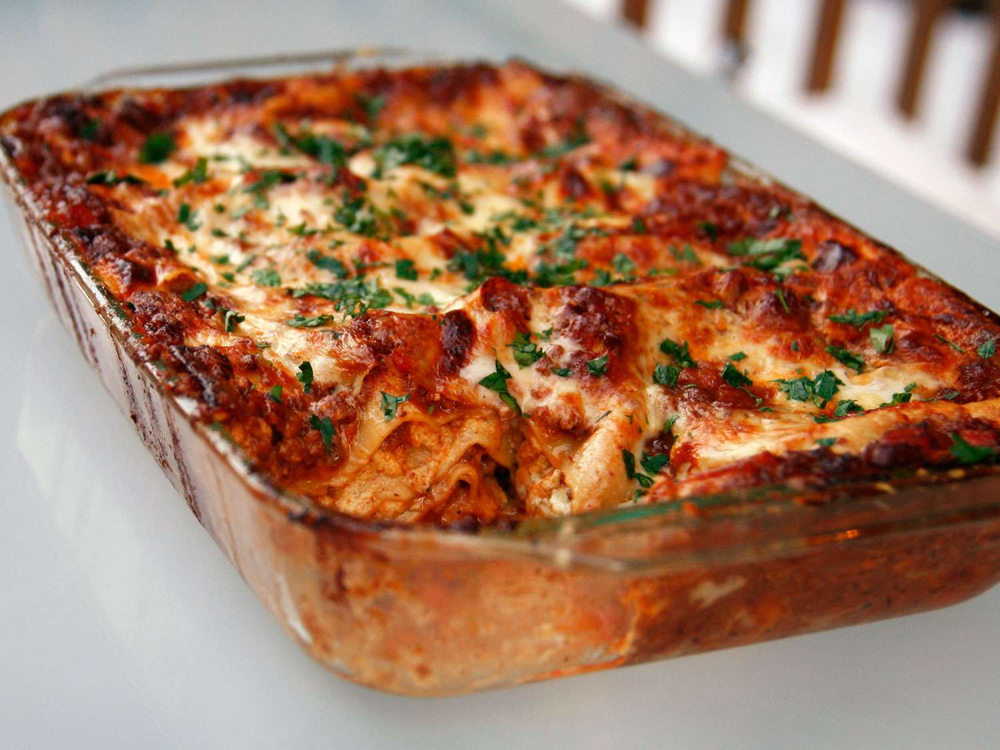

Lasagna
Home

Description
Homemade lasagna made with ground beef, tomato sauce, fresh herbs and a
delicious cheesy filling. Perfect for sharing with family!
Ingredients
- Ground beef
- Onion
- Canned tomato
- Fresh herbs (parsley and garlic)
-
Spices and seasonings (dried basil, dried oregano, salt, black pepper)
- Lasagna noodles
- Cheese (cottage cheese, parmesan and shredded mozzarella)
- Eggs
Instructions
-
Cook the meat: Cook the ground meat in a skillet until browned and
crumbly. Add the onion and continue cooking until it's translucent. Stir
in the canned tomato products, half of the parsley, garlic, basil, 1.5
teaspoons of salt, oregano, and sugar.
-
Cook the noodles: Boil the lasagna noodles in lightly salted water until
they're al dente.
-
Make the cheese layer: Mix cottage cheese, Parmesan cheese, eggs, the
remaining parsley, the remaining salt, and pepper in a bowl.
-
Assemble the lasagna: Layer the ingredients according to the recipe
(starting with sauce and ending with mozzarella) until the lasagna is
assembled.
-
Bake the lasagna: Cover with foil and bake in the preheated oven for
about half an hour. Remove the foil and continue baking until the top is
golden brown.
-
In an oven preheated to 375 degrees F, this homemade lasagna should be
perfectly baked in about 50 minutes (30-40 minutes covered, 5-10 minutes
uncovered).